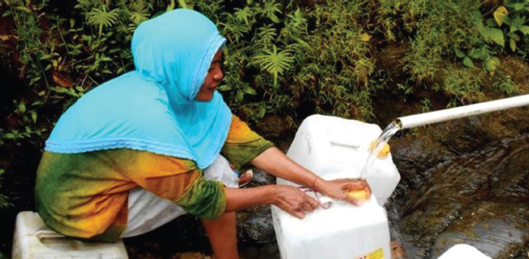

Tujuan Pembelajaran
- Siswa mampu menyebutkan peristiwa-peristiwa atau tindakan pada teks nonfiksi dengan benar.
- Siswa mampu mengidentifikasi manfaat air bagi manusia, hewan, dan tanaman dengan baik.
- Siswa mampu menjelaskan terjadinya siklus air dengan baik.
Ayo Membaca
Demi Air Bersih, Warga Waborobo Rela Berjalan Sejauh 15 Kilometer
Warga Kelurahan Waborobo, Kecamatan Betoambari, Kota Baubau, Sulawesi Tenggara sulit mencari air bersih. Mereka harus menempuh perjalanan hingga sejauh 15 kilometer dari tempat tinggalnya untuk mendapatkan air bersih. Mereka terpaksa mengambil air bersih di Kelurahan Kaisabu Baru, Kecamatan Sorawolio. Mereka biasanya menumpang mobil dan membawa jeriken ukuran 15 liter. Jeriken itu digunakan untuk menampung air yang mengalir dari aliran sebuah anak sungai di Kelurahan Kaisabu Baru.
Letak Kelurahan Waborobo berada di dataran tinggi. Di daerah itu air tanah sulit didapat. Kalau pun ada, air hanya sedikit. Daerah itu juga belum mendapatkan akses aliran air bersih, karena pipa-pipa PDAM belum mencapai ke daerah sana. Warga Kelurahan Waborobo sangat membutuhkan air dan sangat mengharapkan bantuan dari pemerintah daerah untuk keperluan tersebut.
Manusia selalu membutuhkan air dalam kehidupan sehari-hari. Kegunaan air antara lain untuk keperluan rumah tangga, pertanian, industri, dan untuk pembangkit listrik. Begitu besarnya kebutuhan manusia akan air. Kita bersyukur, air senantiasa tersedia di bumi. Oleh karena itu, manusia seharusnya senantiasa bersyukur kepada Tuhan pencipta alam.